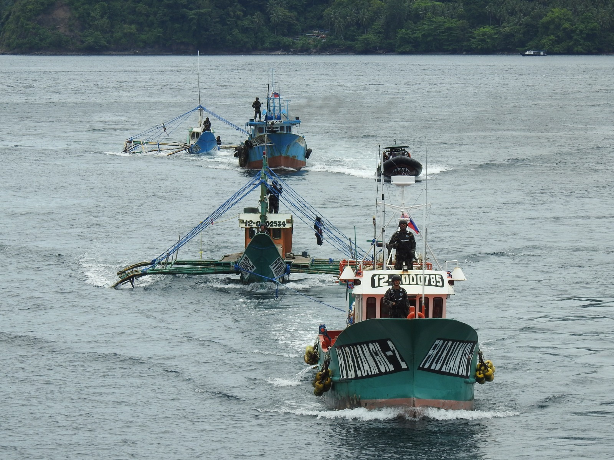

Pengertian
Kerjasama bilateral adalah bentuk hubungan kerja sama yang melibatkan dua negara atau dua pihak yang bekerja secara bersama dengan tujuan saling menguntungkan.
Tujuan dan Manfaat
- Mempererat hubungan diplomatik antara dua negara.
- Perjanjian perdagangan membuka akses pasar yang lebih luas dan mempermudah kegiatan impor serta ekspor barang dan jasa.
- Menarik investasi dari negara mitra sehingga membantu mendorong pembangunan nasional.
- Dalam isu politik dan keamanan, kedua negara dapat saling mendukung untuk menjaga stabilitas kawasan.
- Memajukan bidang kebudayaan dan pendidikan melalui pertukaran pengetahuan serta peningkatan pemahaman antar masyarakat kedua negara.
Hubungan dengan SDGs 14

ANALISIS EFEKTIVITAS KERJASAMA BILATERAL INDONESIA DAN FILIPINA DALAM MENANGANI IUU-FISHING DI MALUKU UTARA 2015-2018
Permasalahan IUU-Fishing di Indonesia khususnya di perairan Maluku utara, terjadi karena kedua Negara ini, Indonesia dan Filipina berbatasan langsung tetapi masih belum memiliki batas-batas yang jelas antara kedua Negara, sehingga sering terjadi kasus IUU-Fishing di Perairan Laut Maluku Utara. Penelitian ini bertujuan untuk mengetahui upaya-upaya yang telah dilakukan oleh pemerintah Indonesia dan Pemerintah Filipina dalam memberantas kegiatan IUU-Fishing di perbatasan kedua Negara tepatnya di Perairan Maluku Utara. Pada penelitian ini penulis menggunakan Teori Efektivitas Rezim Internasional yang digunakan untuk mengetahui bagaimana kerjasama bilateral yang dilakukan oleh Indonesia dan Filipina dalam menangani permasalahan IUU-Fishing.